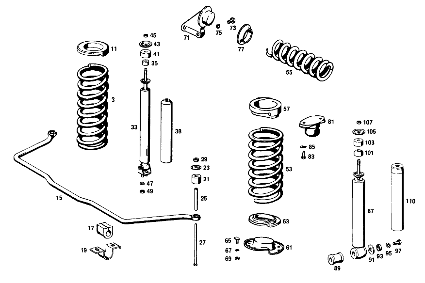

| № | Артикул | Название | Кол. | Примечание | Ограничение |
|---|---|---|---|---|---|
| 3 | A 111 321 15 04 | ПЕРЕДНЯЯ ПРУЖИНА | 2 | 15.75 MM [002] 010 FROM CHASSIS 023661 ALSO INSTALLED ON,SEE FOOTNOTE 18;012 FROM CHASSIS 049856 ALSO INSTALLED ON,SEE FOOTNOTE 19 [018] 023626- 023628, 023631, 023633, 023636, 023639, 023640, 023642- 023644, 023646- 023649, 023651- 023659. [019] TO 111 323 07 00 | |
| 11 | A 111 322 03 85 | Резиновая опора | 2 | ПО НЕОБХОДИМОСТИ 20.0 MM [002] 010 FROM CHASSIS 023661 ALSO INSTALLED ON,SEE FOOTNOTE 18;012 FROM CHASSIS 049856 ALSO INSTALLED ON,SEE FOOTNOTE 19 [018] 023626- 023628, 023631, 023633, 023636, 023639, 023640, 023642- 023644, 023646- 023649, 023651- 023659. [019] TO 111 323 07 00 | |
| 15 | A 111 323 13 65 | СТАБИЛИЗ. ПОПЕР. УСТОЙЧ. | - | ||
| 15 | A 111 323 14 65 | СТАБИЛИЗ. ПОПЕР. УСТОЙЧ. | 1 | 21.5 MM [002] 010 FROM CHASSIS 023661 ALSO INSTALLED ON,SEE FOOTNOTE 18;012 FROM CHASSIS 049856 ALSO INSTALLED ON,SEE FOOTNOTE 19 [018] 023626- 023628, 023631, 023633, 023636, 023639, 023640, 023642- 023644, 023646- 023649, 023651- 023659. [019] TO 111 323 07 00 | |
| 17 | A 111 323 09 85 | САЙЛЕНТ-БЛОК | 2 | СТАБИЛИЗ. НА ПОЛУ КАБИНЫ [002] 010 FROM CHASSIS 023661 ALSO INSTALLED ON,SEE FOOTNOTE 18;012 FROM CHASSIS 049856 ALSO INSTALLED ON,SEE FOOTNOTE 19 [018] 023626- 023628, 023631, 023633, 023636, 023639, 023640, 023642- 023644, 023646- 023649, 023651- 023659. [019] TO 111 323 07 00 | |
| 19 | A 111 323 11 40 | Держатель | 2 | СТАБИЛИЗ. НА ПОЛУ КАБИНЫ | |
| 21 | A 111 323 00 44 | Резиновый буфер | 8 | TORSION BAR TO BOTTOM CONTROL ARMS | |
| 23 | A 111 323 02 67 | Тарелка | 8 | TORSION BAR TO BOTTOM CONTROL ARMS | |
| 25 | A 111 991 10 40 | Проставочная трубка | 2 | TORSION BAR TO BOTTOM CONTROL ARMS | |
| 27 | A 111 990 05 01 | болт | 2 | TORSION BAR TO BOTTOM CONTROL ARMS | |
| 29 | N 000934 008010 | Гайка | - | ||
| 29 | N 304032 008006 | Шестигранная гайка | 4 | TORSION BAR TO BOTTOM CONTROL ARMS; M8 | |
| 33 | A 111 320 00 30 | Амортизатор | 2 | [008] 010 FROM CHASSIS 027317;012 FROM CHASSIS 058399 | |
| 33 | A 108 320 00 30 | Амортизатор | 2 | [010] EXPORT,ON SPECIAL REQUEST;H.D. SPRING SUSPENSION | |
| 35 | A 000 323 12 85 | Резиновая опора | 4 | SHOCK ABSORBERS,TOP,TO WHEEL ARCH BRACKETS [007] 010 UP TO CHASSIS 027316;012 UP TO CHASSIS 058398 | |
| 35 | A 000 323 12 85 | Резиновая опора | 2 | SHOCK ABSORBERS,TOP,TO WHEEL ARCH BRACKETS [008] 010 FROM CHASSIS 027317;012 FROM CHASSIS 058399 | |
| 38 | A 111 323 01 38 | Защитная втулка | 2 | SHOCK ABSORBERS,TOP,TO WHEEL ARCH BRACKETS [006] 010 FROM CHASSIS 014655;012 FROM CHASSIS 029783 | |
| 41 | A 180 326 01 68 | Резиновое кольцо | 2 | TOP SHOCK ABSORBERS,TOP,TO WHEEL ARCH BRACKETS [008] 010 FROM CHASSIS 027317;012 FROM CHASSIS 058399 | |
| 43 | A 115 323 07 67 | Тарелка | 2 | SHOCK ABSORBERS,TOP,TO WHEEL ARCH BRACKETS [008] 010 FROM CHASSIS 027317;012 FROM CHASSIS 058399 | |
| 45 | N 000934 010015 | Гайка | - | ||
| 45 | N 308673 010000 | Шестигранная гайка | 4 | SHOCK ABSORBERS,TOP,TO WHEEL ARCH BRACKETS; M10X1 [008] 010 FROM CHASSIS 027317;012 FROM CHASSIS 058399 | |
| 45 | N 308673 010000 | Шестигранная гайка | 4 | SHOCK ABSORBERS,TOP,TO WHEEL ARCH BRACKETS; M10X1 Коробка передач [010] EXPORT,ON SPECIAL REQUEST;H.D. SPRING SUSPENSION [007] 010 UP TO CHASSIS 027316;012 UP TO CHASSIS 058398 | |
| 47 | N 000127 008003 | КОЛЬЦО ПРУЖИННОЕ | 4 | АМОРТИЗ. НА ПОПЕРЕЧ. РЫЧАГЕ СНИЗУ | |
| 49 | N 000934 008010 | Гайка | - | ||
| 49 | N 304032 008006 | Шестигранная гайка | 4 | АМОРТИЗ. НА ПОПЕРЕЧ. РЫЧАГЕ СНИЗУ; M8 | |
| 53 | A 110 324 30 04 | ЗАДНЯЯ ПРУЖИНА | 2 | 15.5 MM | |
| 55 | A 110 329 04 01 | ПРУЖИНА УРАВНОВ. | 1 | 14.3 MM | |
| 57 | A 108 325 01 85 | Резиновая опора | 2 | ПО НЕОБХОДИМОСТИ 30mm | |
| 61 | A 110 325 07 15 | Тарелка пружины | 2 | ||
| 63 | A 110 325 01 85 | Резиновая опора | 2 | ||
| 65 | A 110 325 01 75 | болт | 4 | SPRING RETAINERS TO THRUST ARMS | |
| 67 | N 000127 008203 | Пружинное кольцо | 4 | SPRING RETAINERS TO THRUST ARMS | |
| 69 | N 000934 008010 | Гайка | - | ||
| 69 | N 304032 008006 | Шестигранная гайка | 4 | SPRING RETAINERS TO THRUST ARMS; M8 | |
| 71 | A 110 320 23 43 | ДЕРЖАТЕЛЬ | 1 | COMPENSATING SPRING | |
| 73 | A 110 990 03 01 | БОЛТ | 2 | TO 110 320 17 43,110 320 23 43 RIGHT SUPPORT TO REAR AXLE [021] TO 110 320 17 43,110 320 23 43 | |
| 75 | N 000127 012200 | Пружинное кольцо | 2 | RIGHT SUPPORT TO REAR AXLE | |
| 77 | A 110 329 00 85 | КОЛЬЦО РЕЗИНОВОЕ | 2 | 18 MM HIGH AS REQUIRED | |
| 81 | A 110 320 05 44 | Резиновый буфер | 2 | TO LIMIT SPRING TRAVEL | |
| 83 | N 000933 008145 | Винт | 4 | RUBBER BUFFERS TO BODY FLOOR; M8 X 18 | |
| 85 | N 000137 008001 | ШАЙБА ПРУЖИННАЯ | 4 | RUBBER BUFFERS TO BODY FLOOR | |
| 87 | A 108 320 01 31 | Амортизатор | 2 | [008] 010 FROM CHASSIS 027317;012 FROM CHASSIS 058399 | |
| 87 | A 108 320 01 31 | Амортизатор | 2 | [010] EXPORT,ON SPECIAL REQUEST;H.D. SPRING SUSPENSION [004] 010 FROM CHASSIS 036231 ALSO INSTALLED ON 032444-033344;012 FROM CHASSIS 077628 ALSO INSTALLED ON 068614-070539 | |
| 89 | A 110 326 02 81 | - Резиновая опора | 2 | TO 110 326 11 00,110 326 02 00,001 326 05 00,111 326 01 00 | |
| 91 | A 110 990 02 40 | Диск | 2 | SHOCK ABSORBERS TO REAR AXLE TUBES | |
| 93 | A 110 326 00 67 | Тарелка | 2 | SHOCK ABSORBERS TO REAR AXLE TUBES | |
| 95 | N 912004 010102 | Пружинное кольцо | 2 | SHOCK ABSORBERS TO REAR AXLE TUBES | |
| 97 | N 000933 010238 | Винт | - | ||
| 97 | N 304017 010028 | Винт с 6-гранной головкой | 2 | SHOCK ABSORBERS TO REAR AXLE TUBES; M10X20\-8.8 [013] 010 FROM CHASSIS 012490;012 FROM CHASSIS 025431 | |
| 101 | A 110 323 05 85 | Резиновая опора | 2 | TO 110 326 02 00,001 326 05 00,110 326 11 00,111 326 01 00 для SHOCK ABSORBER TOP MOUNTING [023] TO 110 326 02 00,001 326 05 00,110 326 11 00,111 326 01 00 | |
| 103 | A 180 326 01 68 | Резиновое кольцо | 2 | TOP для SHOCK ABSORBER TOP MOUNTING | |
| 105 | A 115 323 07 67 | Тарелка | 2 | TOP для SHOCK ABSORBER TOP MOUNTING [008] 010 FROM CHASSIS 027317;012 FROM CHASSIS 058399 | |
| 107 | N 000934 010015 | Гайка | - | ||
| 107 | N 308673 010000 | Шестигранная гайка | 4 | для SHOCK ABSORBER TOP MOUNTING; M10X1 [010] EXPORT,ON SPECIAL REQUEST;H.D. SPRING SUSPENSION [007] 010 UP TO CHASSIS 027316;012 UP TO CHASSIS 058398 [008] 010 FROM CHASSIS 027317;012 FROM CHASSIS 058399 | |
| 110 | A 110 326 02 59 | КОЛПАЧОК | 2 | для 50\-MM\-DIA. REAR SHOCK ABSORBERS [004] 010 FROM CHASSIS 036231 ALSO INSTALLED ON 032444-033344;012 FROM CHASSIS 077628 ALSO INSTALLED ON 068614-070539 | |
| A 111 321 09 04 | ПЕРЕДНЯЯ ПРУЖИНА | 2 | 15.75 MM Коробка передач [001] 010 UP TO CHASSIS 023660 EXCEPT FOR,SEE FOOTNOTE 18;012 UP TO CHASSIS 049855 EXCEPT FOR,SEE FOOTNOTE 19 [018] 023626- 023628, 023631, 023633, 023636, 023639, 023640, 023642- 023644, 023646- 023649, 023651- 023659. [019] TO 111 323 07 00 | ||
| A 111 321 10 04 | ПЕРЕДНЯЯ ПРУЖИНА | 2 | 16.50 MM Коробка передач [001] 010 UP TO CHASSIS 023660 EXCEPT FOR,SEE FOOTNOTE 18;012 UP TO CHASSIS 049855 EXCEPT FOR,SEE FOOTNOTE 19 [018] 023626- 023628, 023631, 023633, 023636, 023639, 023640, 023642- 023644, 023646- 023649, 023651- 023659. [019] TO 111 323 07 00 [010] EXPORT,ON SPECIAL REQUEST;H.D. SPRING SUSPENSION | ||
| A 111 321 19 04 | Упр.элемент подвески пер. | 2 | 16.50 MM [002] 010 FROM CHASSIS 023661 ALSO INSTALLED ON,SEE FOOTNOTE 18;012 FROM CHASSIS 049856 ALSO INSTALLED ON,SEE FOOTNOTE 19 [018] 023626- 023628, 023631, 023633, 023636, 023639, 023640, 023642- 023644, 023646- 023649, 023651- 023659. [019] TO 111 323 07 00 [010] EXPORT,ON SPECIAL REQUEST;H.D. SPRING SUSPENSION [003] 010 UP TO CHASSIS 036230 EXCEPT FOR 032444-033344;012 UP TO CHASSIS 077627 EXCEPT FOR 068614-070539 | ||
| A 110 321 09 04 | ПЕРЕДНЯЯ ПРУЖИНА | 2 | 16.50 MM [010] EXPORT,ON SPECIAL REQUEST;H.D. SPRING SUSPENSION [004] 010 FROM CHASSIS 036231 ALSO INSTALLED ON 032444-033344;012 FROM CHASSIS 077628 ALSO INSTALLED ON 068614-070539 | ||
| A 110 321 09 04 | ПЕРЕДНЯЯ ПРУЖИНА | 2 | 16.50 MM [014] ON MODEL 000 AMBULANCE [015] NOT FOR USE WITH MERCEDES-BENZ HYDRAULIC-AUTOMATIC CLUTCH | ||
| A 120 322 00 84 | ВКЛАДКА | 2 | ПО НЕОБХОДИМОСТИ 3.0 MM Коробка передач [001] 010 UP TO CHASSIS 023660 EXCEPT FOR,SEE FOOTNOTE 18;012 UP TO CHASSIS 049855 EXCEPT FOR,SEE FOOTNOTE 19 [018] 023626- 023628, 023631, 023633, 023636, 023639, 023640, 023642- 023644, 023646- 023649, 023651- 023659. [019] TO 111 323 07 00 | ||
| A 111 322 01 84 | ВКЛАДКА | 2 | ПО НЕОБХОДИМОСТИ 5.5 MM Коробка передач [001] 010 UP TO CHASSIS 023660 EXCEPT FOR,SEE FOOTNOTE 18;012 UP TO CHASSIS 049855 EXCEPT FOR,SEE FOOTNOTE 19 [018] 023626- 023628, 023631, 023633, 023636, 023639, 023640, 023642- 023644, 023646- 023649, 023651- 023659. [019] TO 111 323 07 00 | ||
| A 111 322 02 84 | ВКЛАДКА | 2 | ПО НЕОБХОДИМОСТИ 8.0 MM Коробка передач [001] 010 UP TO CHASSIS 023660 EXCEPT FOR,SEE FOOTNOTE 18;012 UP TO CHASSIS 049855 EXCEPT FOR,SEE FOOTNOTE 19 [018] 023626- 023628, 023631, 023633, 023636, 023639, 023640, 023642- 023644, 023646- 023649, 023651- 023659. [019] TO 111 323 07 00 | ||
| A 111 322 03 84 | ВКЛАДКА | 2 | ПО НЕОБХОДИМОСТИ 10.0 MM Коробка передач [001] 010 UP TO CHASSIS 023660 EXCEPT FOR,SEE FOOTNOTE 18;012 UP TO CHASSIS 049855 EXCEPT FOR,SEE FOOTNOTE 19 [018] 023626- 023628, 023631, 023633, 023636, 023639, 023640, 023642- 023644, 023646- 023649, 023651- 023659. [019] TO 111 323 07 00 | ||
| A 111 322 04 84 | ВКЛАДКА | 2 | ПО НЕОБХОДИМОСТИ 12.0 MM Коробка передач [001] 010 UP TO CHASSIS 023660 EXCEPT FOR,SEE FOOTNOTE 18;012 UP TO CHASSIS 049855 EXCEPT FOR,SEE FOOTNOTE 19 [018] 023626- 023628, 023631, 023633, 023636, 023639, 023640, 023642- 023644, 023646- 023649, 023651- 023659. [019] TO 111 323 07 00 | ||
| A 110 322 12 85 | САЙЛЕНТ-БЛОК | 2 | ПО НЕОБХОДИМОСТИ 13 MM Коробка передач [001] 010 UP TO CHASSIS 023660 EXCEPT FOR,SEE FOOTNOTE 18;012 UP TO CHASSIS 049855 EXCEPT FOR,SEE FOOTNOTE 19 [018] 023626- 023628, 023631, 023633, 023636, 023639, 023640, 023642- 023644, 023646- 023649, 023651- 023659. [019] TO 111 323 07 00 | ||
| A 110 322 13 85 | САЙЛЕНТ-БЛОК | 2 | ПО НЕОБХОДИМОСТИ 15.5 MM Коробка передач [001] 010 UP TO CHASSIS 023660 EXCEPT FOR,SEE FOOTNOTE 18;012 UP TO CHASSIS 049855 EXCEPT FOR,SEE FOOTNOTE 19 [018] 023626- 023628, 023631, 023633, 023636, 023639, 023640, 023642- 023644, 023646- 023649, 023651- 023659. [019] TO 111 323 07 00 | ||
| A 110 322 16 85 | САЙЛЕНТ-БЛОК | 2 | ПО НЕОБХОДИМОСТИ 18mm Коробка передач [001] 010 UP TO CHASSIS 023660 EXCEPT FOR,SEE FOOTNOTE 18;012 UP TO CHASSIS 049855 EXCEPT FOR,SEE FOOTNOTE 19 [018] 023626- 023628, 023631, 023633, 023636, 023639, 023640, 023642- 023644, 023646- 023649, 023651- 023659. [019] TO 111 323 07 00 | ||
| A 110 322 17 85 | САЙЛЕНТ-БЛОК | - | Коробка передач | ||
| A 110 322 18 85 | САЙЛЕНТ-БЛОК | 2 | ПО НЕОБХОДИМОСТИ 20.5 MM Коробка передач [001] 010 UP TO CHASSIS 023660 EXCEPT FOR,SEE FOOTNOTE 18;012 UP TO CHASSIS 049855 EXCEPT FOR,SEE FOOTNOTE 19 [018] 023626- 023628, 023631, 023633, 023636, 023639, 023640, 023642- 023644, 023646- 023649, 023651- 023659. [019] TO 111 323 07 00 | ||
| A 110 322 18 85 | САЙЛЕНТ-БЛОК | 2 | ПО НЕОБХОДИМОСТИ 23 MM Коробка передач [001] 010 UP TO CHASSIS 023660 EXCEPT FOR,SEE FOOTNOTE 18;012 UP TO CHASSIS 049855 EXCEPT FOR,SEE FOOTNOTE 19 [018] 023626- 023628, 023631, 023633, 023636, 023639, 023640, 023642- 023644, 023646- 023649, 023651- 023659. [019] TO 111 323 07 00 | ||
| A 111 322 04 85 | Резиновая опора | 2 | ПО НЕОБХОДИМОСТИ 22.5 MM [002] 010 FROM CHASSIS 023661 ALSO INSTALLED ON,SEE FOOTNOTE 18;012 FROM CHASSIS 049856 ALSO INSTALLED ON,SEE FOOTNOTE 19 [018] 023626- 023628, 023631, 023633, 023636, 023639, 023640, 023642- 023644, 023646- 023649, 023651- 023659. [019] TO 111 323 07 00 | ||
| A 111 322 05 85 | Резиновая опора | 2 | ПО НЕОБХОДИМОСТИ 25.0 MM [002] 010 FROM CHASSIS 023661 ALSO INSTALLED ON,SEE FOOTNOTE 18;012 FROM CHASSIS 049856 ALSO INSTALLED ON,SEE FOOTNOTE 19 [018] 023626- 023628, 023631, 023633, 023636, 023639, 023640, 023642- 023644, 023646- 023649, 023651- 023659. [019] TO 111 323 07 00 | ||
| A 111 322 06 85 | Резиновая опора | 2 | ПО НЕОБХОДИМОСТИ 27.5 MM [002] 010 FROM CHASSIS 023661 ALSO INSTALLED ON,SEE FOOTNOTE 18;012 FROM CHASSIS 049856 ALSO INSTALLED ON,SEE FOOTNOTE 19 [018] 023626- 023628, 023631, 023633, 023636, 023639, 023640, 023642- 023644, 023646- 023649, 023651- 023659. [019] TO 111 323 07 00 | ||
| A 111 322 07 85 | Резиновая опора | 2 | ПО НЕОБХОДИМОСТИ 30.5 MM [002] 010 FROM CHASSIS 023661 ALSO INSTALLED ON,SEE FOOTNOTE 18;012 FROM CHASSIS 049856 ALSO INSTALLED ON,SEE FOOTNOTE 19 [018] 023626- 023628, 023631, 023633, 023636, 023639, 023640, 023642- 023644, 023646- 023649, 023651- 023659. [019] TO 111 323 07 00 | ||
| A 111 322 08 85 | Резиновая опора | 2 | ПО НЕОБХОДИМОСТИ 32.5 MM [002] 010 FROM CHASSIS 023661 ALSO INSTALLED ON,SEE FOOTNOTE 18;012 FROM CHASSIS 049856 ALSO INSTALLED ON,SEE FOOTNOTE 19 [018] 023626- 023628, 023631, 023633, 023636, 023639, 023640, 023642- 023644, 023646- 023649, 023651- 023659. [019] TO 111 323 07 00 | ||
| A 111 323 12 65 | СТАБИЛИЗ. ПОПЕР. УСТОЙЧ. | 1 | 20 MM Коробка передач [001] 010 UP TO CHASSIS 023660 EXCEPT FOR,SEE FOOTNOTE 18;012 UP TO CHASSIS 049855 EXCEPT FOR,SEE FOOTNOTE 19 [018] 023626- 023628, 023631, 023633, 023636, 023639, 023640, 023642- 023644, 023646- 023649, 023651- 023659. [019] TO 111 323 07 00 | ||
| A 111 323 06 85 | САЙЛЕНТ-БЛОК | 2 | СТАБИЛИЗ. НА ПОЛУ КАБИНЫ Коробка передач [001] 010 UP TO CHASSIS 023660 EXCEPT FOR,SEE FOOTNOTE 18;012 UP TO CHASSIS 049855 EXCEPT FOR,SEE FOOTNOTE 19 [018] 023626- 023628, 023631, 023633, 023636, 023639, 023640, 023642- 023644, 023646- 023649, 023651- 023659. [019] TO 111 323 07 00 | ||
| A 111 323 01 73 | ПРЕДОХРАНИТЕЛЬ | 2 | СТАБИЛИЗ. НА ПОЛУ КАБИНЫ Коробка передач [001] 010 UP TO CHASSIS 023660 EXCEPT FOR,SEE FOOTNOTE 18;012 UP TO CHASSIS 049855 EXCEPT FOR,SEE FOOTNOTE 19 [018] 023626- 023628, 023631, 023633, 023636, 023639, 023640, 023642- 023644, 023646- 023649, 023651- 023659. [019] TO 111 323 07 00 | ||
| A 111 586 00 32 | РЕМКОМПЛЕКТ | 1 | СТАБИЛИЗ. ПОПЕР. УСТОЙЧ. [016] 010 UP TO CHASSIS 023660;012 UP TO CHASSIS 049855 | ||
| A 111 586 01 32 | РЕМКОМПЛЕКТ | 1 | СТАБИЛИЗ. ПОПЕР. УСТОЙЧ. [017] 010 FROM CHASSIS 023661;012 FROM CHASSIS 049856 | ||
| A 111 323 04 00 | АМОРТИЗАТОР | - | [005] 010 UP TO CHASSIS 014654;012 UP TO CHASSIS 029782 | ||
| A 111 323 08 00 | АМОРТИЗАТОР | - | [005] 010 UP TO CHASSIS 014654;012 UP TO CHASSIS 029782 | ||
| A 111 323 09 00 | АМОРТИЗАТОР | - | [006] 010 FROM CHASSIS 014655;012 FROM CHASSIS 029783 [007] 010 UP TO CHASSIS 027316;012 UP TO CHASSIS 058398 | ||
| A 115 323 07 67 | - Тарелка | 2 | |||
| A 000 323 12 85 | - Резиновая опора | 2 | |||
| A 180 326 01 68 | - Резиновое кольцо | 2 | |||
| N 000934 010015 | - Гайка | - | |||
| N 308673 010000 | - Шестигранная гайка | 4 | M10X1 | ||
| A 112 323 00 53 | РАСПОРН. ТРУБКА | 2 | SHOCK ABSORBERS,TOP,TO WHEEL ARCH BRACKETS [006] 010 FROM CHASSIS 014655;012 FROM CHASSIS 029783 [007] 010 UP TO CHASSIS 027316;012 UP TO CHASSIS 058398 | ||
| A 180 323 04 85 | САЙЛЕНТ-БЛОК | 2 | BOTTOM,TO 111 323 07 00 SHOCK ABSORBER SHOCK ABSORBERS,TOP,TO WHEEL ARCH BRACKETS [019] TO 111 323 07 00 | ||
| A 000 323 08 62 | ШАЙБА УПОРНАЯ | 2 | SHOCK ABSORBERS,TOP,TO WHEEL ARCH BRACKETS [005] 010 UP TO CHASSIS 014654;012 UP TO CHASSIS 029782 | ||
| A 000 323 11 62 | ШАЙБА УПОРНАЯ | 2 | SHOCK ABSORBERS,TOP,TO WHEEL ARCH BRACKETS [007] 010 UP TO CHASSIS 027316;012 UP TO CHASSIS 058398 | ||
| A 000 323 03 62 | ШАЙБА УПОРНАЯ | 2 | SHOCK ABSORBERS,TOP,TO WHEEL ARCH BRACKETS Коробка передач [005] 010 UP TO CHASSIS 014654;012 UP TO CHASSIS 029782 | ||
| A 000 323 03 62 | ШАЙБА УПОРНАЯ | 4 | SHOCK ABSORBERS,TOP,TO WHEEL ARCH BRACKETS Коробка передач [006] 010 FROM CHASSIS 014655;012 FROM CHASSIS 029783 [007] 010 UP TO CHASSIS 027316;012 UP TO CHASSIS 058398 | ||
| A 000 990 59 51 | ГАЙКА | 4 | SHOCK ABSORBERS,TOP,TO WHEEL ARCH BRACKETS Коробка передач [007] 010 UP TO CHASSIS 027316;012 UP TO CHASSIS 058398 | ||
| A 110 324 12 04 | ЗАДНЯЯ ПРУЖИНА | 2 | 16.3 MM [010] EXPORT,ON SPECIAL REQUEST;H.D. SPRING SUSPENSION [011] ON SPECIAL REQUEST,300-W GENERATOR | ||
| A 110 329 05 01 | ПРУЖИНА УРАВНОВ. | 1 | 14.8 MM [010] EXPORT,ON SPECIAL REQUEST;H.D. SPRING SUSPENSION [011] ON SPECIAL REQUEST,300-W GENERATOR | ||
| A 108 325 02 85 | Резиновая опора | 2 | ПО НЕОБХОДИМОСТИ 24mm | ||
| A 108 325 02 85 | Резиновая опора | 2 | ПО НЕОБХОДИМОСТИ 18mm | ||
| A 110 990 03 01 | БОЛТ | 2 | TO 110 320 16 43 RIGHT SUPPORT TO REAR AXLE [020] TO 110 320 16 43 | ||
| A 110 329 01 85 | КОЛЬЦО РЕЗИНОВОЕ | 2 | 21 MM HIGH AS REQUIRED | ||
| A 000 326 82 00 | АМОРТИЗАТОР | - | Коробка передач [007] 010 UP TO CHASSIS 027316;012 UP TO CHASSIS 058398 [408] ЗАМЕНЯТЬ ТОЛЬКО ПАРАМИ | ||
| A 110 326 02 00 | АМОРТИЗАТОР | - | [010] EXPORT,ON SPECIAL REQUEST;H.D. SPRING SUSPENSION [003] 010 UP TO CHASSIS 036230 EXCEPT FOR 032444-033344;012 UP TO CHASSIS 077627 EXCEPT FOR 068614-070539 [408] ЗАМЕНЯТЬ ТОЛЬКО ПАРАМИ | ||
| A 115 323 07 67 | - Тарелка | 2 | |||
| A 110 323 05 85 | - Резиновая опора | 2 | |||
| A 110 326 00 67 | - Тарелка | 2 | |||
| A 180 326 01 68 | - Резиновое кольцо | 2 | |||
| A 110 990 02 40 | - Диск | 2 | |||
| N 000934 010015 | - Гайка | - | |||
| N 308673 010000 | - Шестигранная гайка | 4 | M10X1 | ||
| A 110 326 02 81 | - Резиновая опора | 2 | TO 000 326 82 00,001 326 01 00 Коробка передач | ||
| N 000934 010014 | Гайка | 2 | SHOCK ABSORBERS TO REAR AXLE TUBES Коробка передач [012] 010 UP TO CHASSIS 012489;012 UP TO CHASSIS 025430 | ||
| A 111 323 05 83 | ТАРЕЛКА | 2 | BOTTOM для SHOCK ABSORBER TOP MOUNTING Коробка передач [007] 010 UP TO CHASSIS 027316;012 UP TO CHASSIS 058398 | ||
| A 000 323 08 53 | РАСПОРН. ТРУБКА | 2 | для SHOCK ABSORBER TOP MOUNTING Коробка передач [007] 010 UP TO CHASSIS 027316;012 UP TO CHASSIS 058398 | ||
| A 180 323 04 85 | САЙЛЕНТ-БЛОК | 2 | TO 000 326 82 00,001 326 01 00 для SHOCK ABSORBER TOP MOUNTING [022] TO 000 326 82 00,001 326 01 00 | ||
| A 111 323 04 83 | ТАРЕЛКА | 2 | TOP для SHOCK ABSORBER TOP MOUNTING Коробка передач [007] 010 UP TO CHASSIS 027316;012 UP TO CHASSIS 058398 | ||
| A 000 990 59 51 | ГАЙКА | 4 | для SHOCK ABSORBER TOP MOUNTING Коробка передач [007] 010 UP TO CHASSIS 027316;012 UP TO CHASSIS 058398 | ||
| A 110 326 00 59 | КОЛПАЧОК | 2 | для 56\-MM\-DIA. REAR SHOCK ABSORBERS;EXPORT,ON SPECIAL REQUEST [003] 010 UP TO CHASSIS 036230 EXCEPT FOR 032444-033344;012 UP TO CHASSIS 077627 EXCEPT FOR 068614-070539 | ||
| N 916017 040000 | Хомут | - | |||
| N 000000 000671 | Хомут | 2 | EXPORT, ON SPECIAL REQUEST; MBN 10223\-40\-60X13\-SW8\-W3 [004] 010 FROM CHASSIS 036231 ALSO INSTALLED ON 032444-033344;012 FROM CHASSIS 077628 ALSO INSTALLED ON 068614-070539 | ||
| A 110 320 00 56 | Крепежные детали | 1 | АМОРТИЗАТОР НА ПЕРЕДНЕМ МОСТУ | ||
| A 110 320 01 56 | Крепежные детали | 1 | АМОРТИЗ. НА ЗАДН. МОСТУ [008] 010 FROM CHASSIS 027317;012 FROM CHASSIS 058399 | ||
| A 111 586 02 32 | РЕМКОМПЛЕКТ | 1 | АМОРТИЗ. НА ЗАДН. МОСТУ [007] 010 UP TO CHASSIS 027316;012 UP TO CHASSIS 058398 |
Позиций: 124 · подписано на схемах: 55 · колесо — плавный зум в курсор, перетаскивание — пан, двойной клик — зум, клик по артикулу — скопировать.